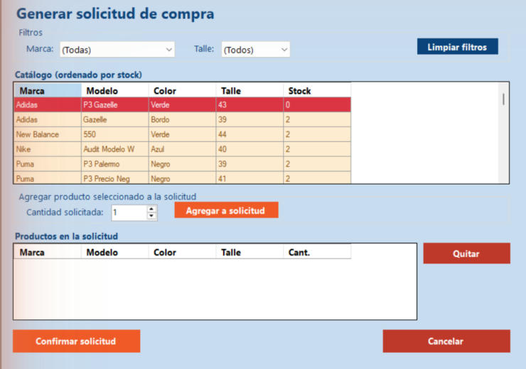

Inicio › Compra › Generar solicitud de compra
Generar solicitud de compra
Una solicitud es la lista de lo que falta comprar. El catálogo aparece ordenado de menor a mayor stock, así lo urgente queda arriba. Elegís productos, indicás cuántos querés y confirmás: la solicitud queda pendiente hasta que se arme la orden de compra.
Dónde está: Compra › Generar solicitud de compraLo usa: AdministradorAtajo: F1
Pasá el mouse por encima de cualquier botón o campo de la pantalla para ver qué hace.

Qué hace cada elemento
- 1Filtro de marcaMostrá solo los productos de una marca. "(Todas)" los muestra a todos.
- 2Filtro de talleMostrá solo un talle. "(Todos)" los muestra a todos.
- 3Limpiar filtrosQuita los filtros de marca y talle y vuelve a mostrar todo el catálogo.
- 4Catálogo ordenado por stockLos productos con menos stock van primero. Rojo: sin stock (0). Naranja: stock bajo (3 o menos). Tocá una fila para elegirla.
- 5Cantidad solicitadaCuántos pares querés pedir del producto elegido. Entre 1 y 9999.
- 6Agregar a solicitudSuma el producto elegido, con esa cantidad, a la lista de abajo. Si ya estaba, le suma la cantidad.
- 7Productos en la solicitudLo que llevás armado: marca, modelo, color, talle y cantidad. Todavía no se guardó nada.
- 8QuitarSaca de la solicitud el producto que elegiste en la lista de abajo.
- 9Confirmar solicitudGuarda la solicitud con todo lo que cargaste. Queda en estado Pendiente.
- 10CancelarDescarta lo que armaste y cierra la pantalla.
Cómo hacerlo
- Si buscás algo puntual, usá los filtros de Marca y Talle.
- Tocá un producto del catálogo.
- Indicá la Cantidad solicitada y tocá Agregar a solicitud.
- Repetí con los demás productos.
- Revisá la lista de abajo. Si algo sobra, elegilo y tocá Quitar.
- Tocá Confirmar solicitud. Aparece "Solicitud de compra generada correctamente".
Tené en cuenta: La solicitud no lleva proveedor ni precios: eso se define después en Registrar orden de compra.
Para saber más
Mensajes que puede mostrar el sistema 6
| Mensaje | Qué significa y qué hacer |
|---|---|
| AvisoSeleccione un producto del catálogo. | Tocá una fila del catálogo antes de agregar. |
| AvisoCantidad inválida. | La cantidad debe ser un número entero mayor a cero. |
| AvisoLa solicitud no tiene productos. | Agregá al menos un producto antes de confirmar. |
| AvisoLa cantidad debe estar entre 1 y 9999 | Corregí la cantidad. |
| ListoSolicitud de compra generada correctamente | La solicitud quedó pendiente, lista para convertirse en orden de compra. |
| ErrorOcurrió un error inesperado. El detalle quedó registrado en la bitácora | No se guardó la solicitud. Avisale al administrador. |
Reglas a tener en cuenta 5
- Solo el Administrador puede generar solicitudes.
- El catálogo se ordena por stock ascendente para que lo más urgente aparezca primero.
- Si agregás dos veces el mismo producto, las cantidades se suman en una sola línea.
- Estado de la solicitud: nace Pendiente y pasa a otro estado cuando se usa en una orden de compra.
- La generación queda registrada en la Bitácora (módulo Compras).
Temas relacionados
SneakRush · Ayuda del sistema · Generar solicitud de compra. Podés abrir esta ayuda desde cualquier pantalla con la tecla F1.